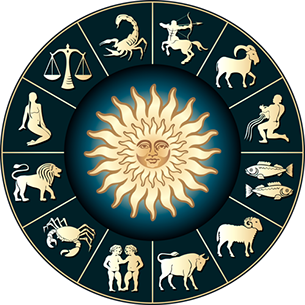

О чем все это

Разработанная страничка генерирует абстрактные предсказания. С параметрами генерации можно ознакомиться ниже:
- Время дня:
- утром
- днем
- вечером
- Глаголы:
- ожидайте
- предостерегайтесь
- будьте открыты для
- События:
- гостей из забытого прошлого
- приятных перемен
На главную